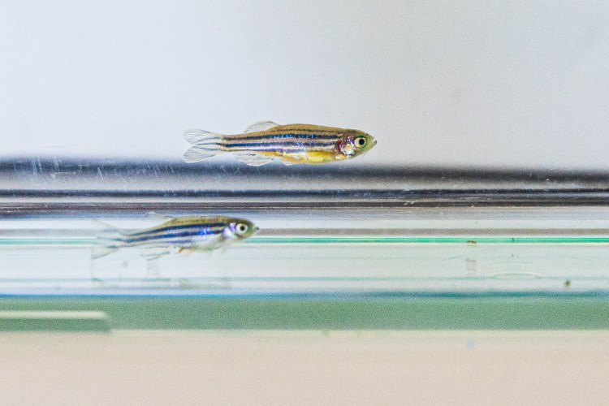
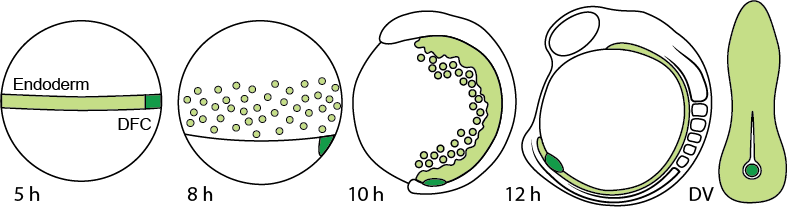
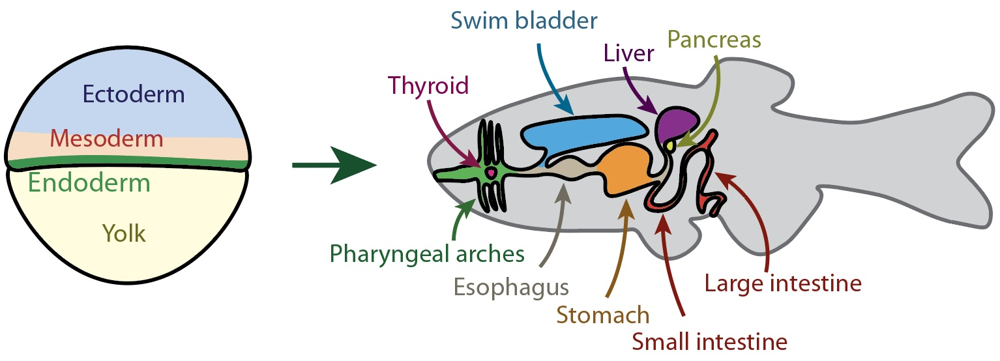
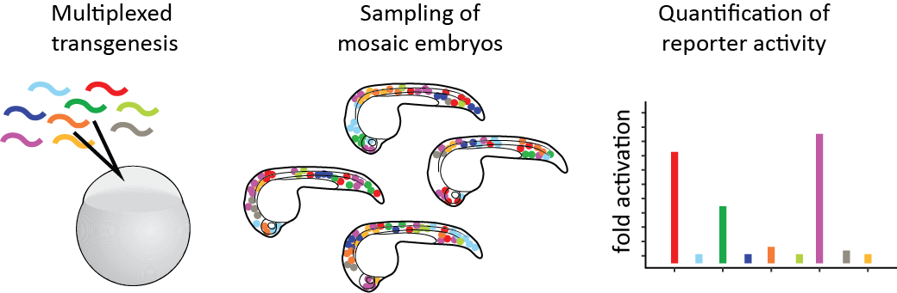
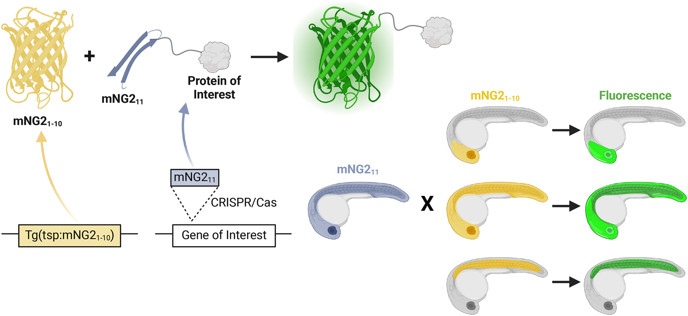

We study how regulatory programs control morphogenesis, using the zebrafish sox17 lineage to connect gene regulation, cell behavior, and embryonic patterning.

Overview
From regulatory proteins to morphogenesis
How cells are specified in an embryo is an old question in developmental biology. The field now has a good conceptional understanding of basic patterning processes, e.g., how a uniform group of cells splits into two with diverging fates. Such processes are under the control of regulatory proteins—transcription factors and signaling molecules—that execute the regulatory logic encoded in the genome.
But how do a few regulatory proteins control the intricate processes that organize cells into more complex arrangements? Rearranging cells in space results in morphogenesis, the shaping of the embryo. Although the core pathways that underly morphogenesis are deeply conserved, understanding their precise control remains a daunting challenge. Indeed, how do a few regulatory proteins control a precise program of many, often dozens or hundreds of genes?
Single cell RNA sequencing technology has enabled unprecedented resolution in discovering the diversity of transcriptional states and responses over the course of animal development. Simultaneously, advancements in microscopy enable detailed investigation of dynamic processes at the level of single molecules to whole tissues. We combine these technologies to understand the control of morphogenesis using the zebrafish sox17 lineage as a model.
Model system
The zebrafish sox17 lineage
The zebrafish sox17 lineage consists of endoderm and dorsal forerunner cells (DFCs), which are both specified in response to Nodal signaling prior to gastrulation. Initially, endoderm and DFCs express similar gene sets, including many lineage-determining transcription factors. But despite these similarities, their morphogenetic behavior quickly diverges. Endoderm cells ingress and disperse as individual cells before converging on the midline. Here they will form the epithelial layers of, among others, the gut and respiratory tracts. In contrast, DFCs remain pseudo-epithelial, migrate as a group, and form the ciliated epithelium of Kupffer’s Vesicle (KV), the organ of asymmetry.

Endoderm and dorsal forerunner cell migration during early zebrafish development.
Research areas
Questions we pursue
The approaches in our lab span multiple scales, from understanding regulation of individual genes to perturbing signaling systems that affect the embryo wholesale. Here are some areas where we concentrate our efforts:
Control of endoderm migration
How do endodermal cells switch from dispersal to convergence to epithelium formation? What determines their motility, directionality, and adhesion?
Our recent work identifies the receptor tyrosine kinase Met as a key regulator of zebrafish endoderm convergence. We show that Met promotes directional migration and migratory persistence during endoderm morphogenesis. Check out our preprint on bioRxiv.
Patterning of endoderm
Migrating endoderm is highly heterogenous. We have found that there are several subtypes of endoderm that may constitute true lineages. We are interested in the molecular mechanisms underlying this divergence as well as what this divergence means for cell fate and morphogenetic behavior.

From germ layer to organ system(s): a schematic of endoderm and (most of) its derivatives in the adult. Drawing by Baldemar Motomochi Cedillo.
Morphogenesis of Kupffer’s Vesicle
DFCs follow a canonical morphogenetic program to turn into KV, which includes migration, polarization, inflation, and eventually the extrusion of cilia. We have identified new genes that are important for proper KV formation and function. Among these is the syne1b gene that encodes a giant nesprin. As might be expected, loss of Nesprin1 function causes L/R defects in zebrafish.
Technology
New tools for new questions
We are always engaged in developing new or implementing existing technology to aid our research. This includes:
Parallel reporter assays for discovery and analysis of gene regulatory modules
The genetic information is identical in all cells, yet cells use this information differentially. This is a direct consequence of transcriptional control, which is executed by gene regulatory modules—non-coding regions of the DNA that are associated with nearby genes. Gene regulatory modules are traditionally characterized in reporter assays that involve the generation of transgenic animals—a slow and tedious process. We have implemented a parallel reporter assay for use in zebrafish. This system was used in a recent study to test hundreds of candidate gene regulatory modules in the discovery of a regeneration-responsive enhancer. A description of our approach is in press at Developmental Biology. Current efforts in the lab are aimed at taking this technology to the next level.

Summary of the parallel reporter approach. Barcoded reporter constructs are co-injected into zebrafish eggs. Mosaic embryos are harvested, and reporter activity is determined relative to reporter prevalence.
Tissue-specific and endogenous protein labeling with split fluorescent proteins
Seeing is believing. Arguably, one of the biggest advances in biology was the adaptation of fluorescent proteins as a tool. Fluorescent proteins can be appended to endogenous proteins to reveal their expression and even subcellular localization. But this is not without challenges: if fusion proteins are expressed as transgenes, they are prone to expression artifacts. A way to circumvent such issues is genetic tagging, where the fluorescent protein is inserted into the genome, but this comes at the expense of tissue-specificity. To overcome these limitations, we have adopted a split-fluorescent-protein system to achieve tissue-specific and endogenous protein labeling in zebrafish. Check out our paper for the details.

A large piece of the fluorescent protein is expressed off a transgene, a small piece is inserted into the genome.
Fluorescence is resconstituted when both proteins are present in the same cell.
Optogenetic control of gene expression in zebrafish
Inducible gene expression systems are valuable tools for studying biological processes. We collaborated with our neighbors, the Woo lab, to improve the light-inducible TAEL system, which enables precise control of transgene expression in zebrafish. The performance of this system is discussed in this still recent paper.